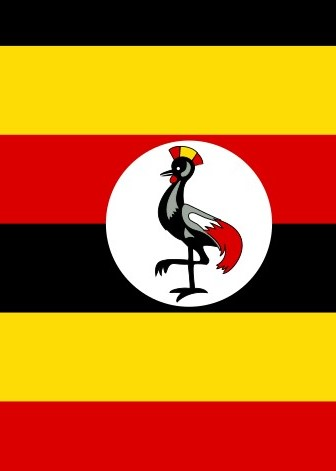

About me
My name is Marvin Baliraine, l was born in Uganda Jinja where l live with my family. I am currently working for beselfless organisation as a tutor who helps students under Byu pathway. l have a son called Alpha and l love spending my free time touring and exploring new places. l also love learning new things most especially in programming.

the official flag of uganda
the official flag of uganda
Uganda is a landlocked country located in East africa. Uganda is bordered by kenya to the east, south sudan to the north, the Democratic Republic of Congo to the west, Rwanda to the southwest, and Tanzania to the south. it is home to the source of the Nile River and has several large lakes, including lake victoria, which is Africa's largest lake.